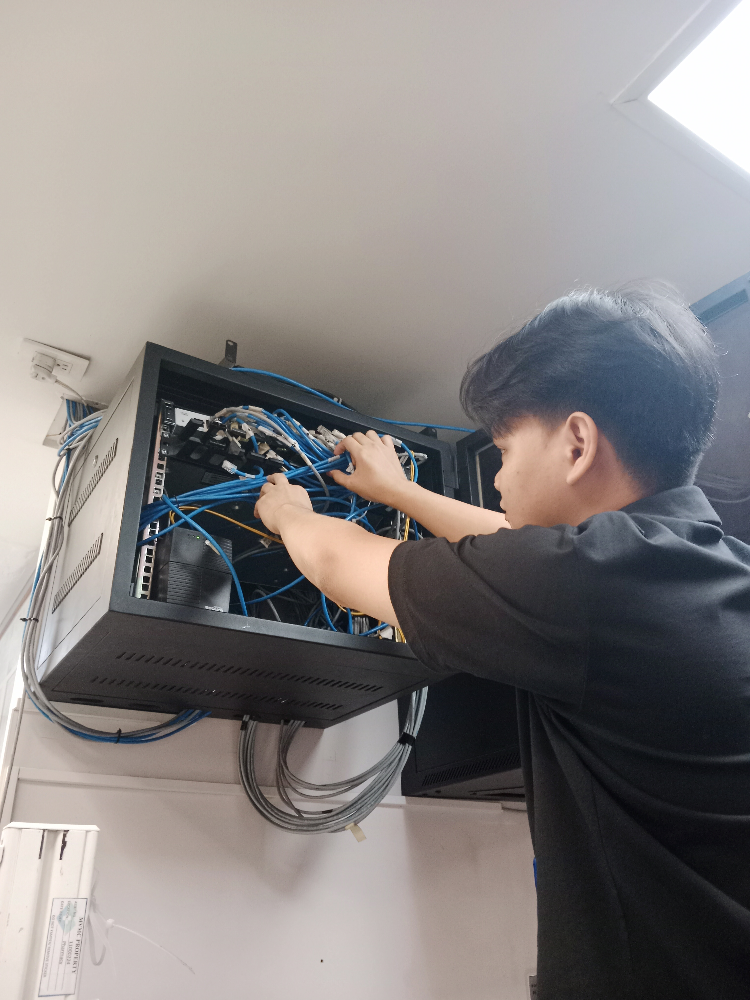
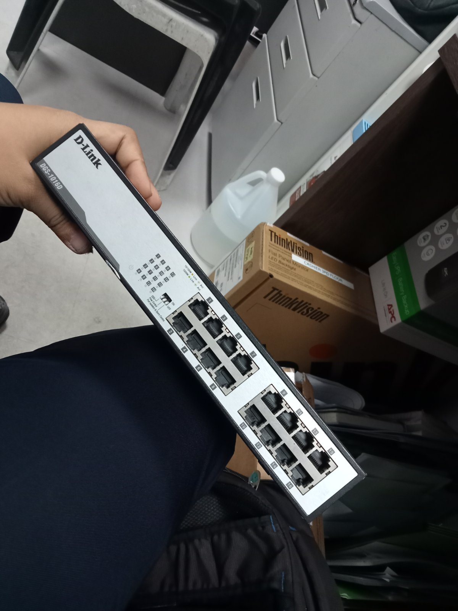
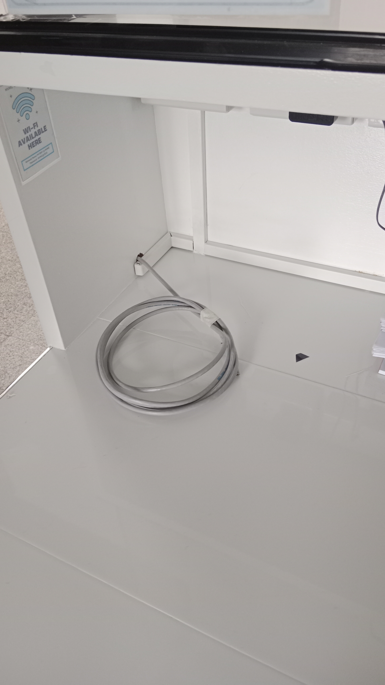
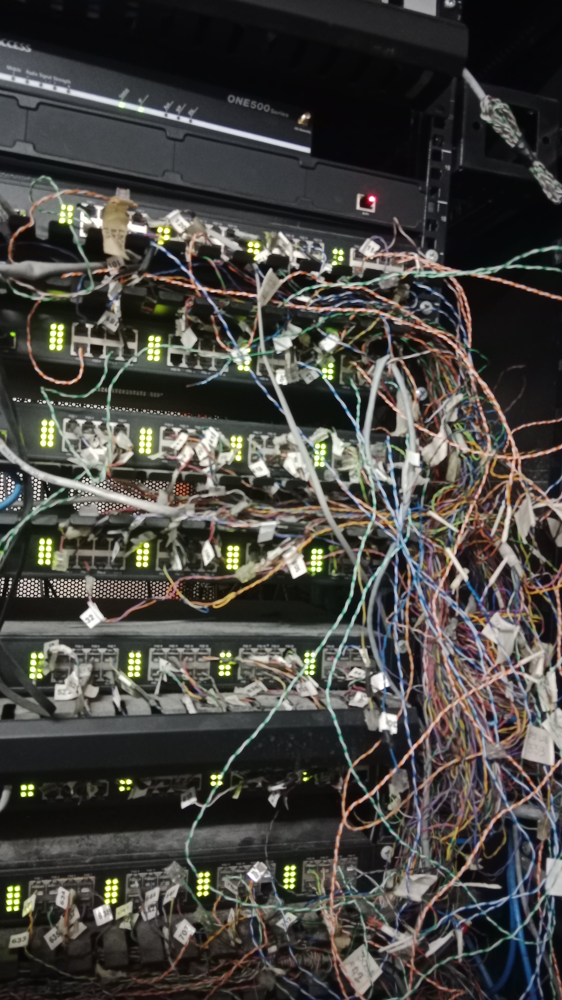
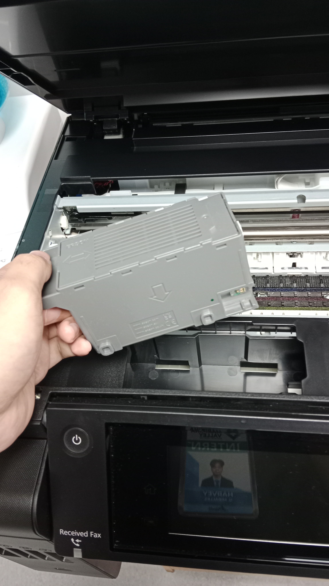
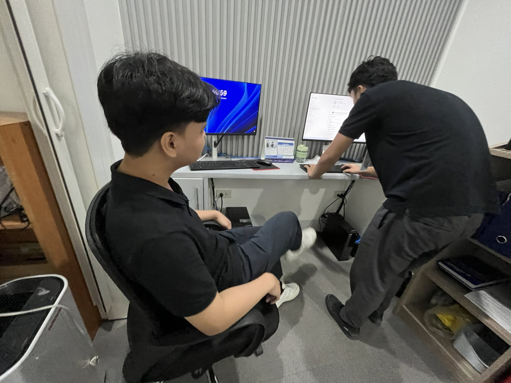
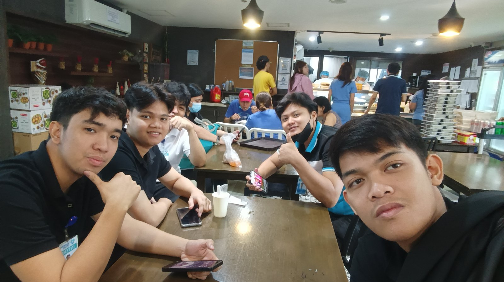

Maintenance the network Switch

Preparing the Network Switch for Setup and Terminating Lan Cables

Terminating Lan Cables in Every Departments

Diagnosing the Computer Set to Identify the Problem

Maintenance and Checking the CCTV Connectivity

Troubleshooting a Printer and Resolving the Problem

Resolving the Staff Problems in Hardware and Software

Collaborated with senior IT staff and co-Interns to minimize downtime and ensure minimal disruption of hospital operations while performing technical tasks.
